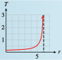
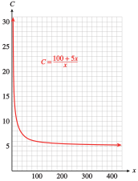
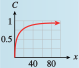
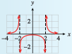
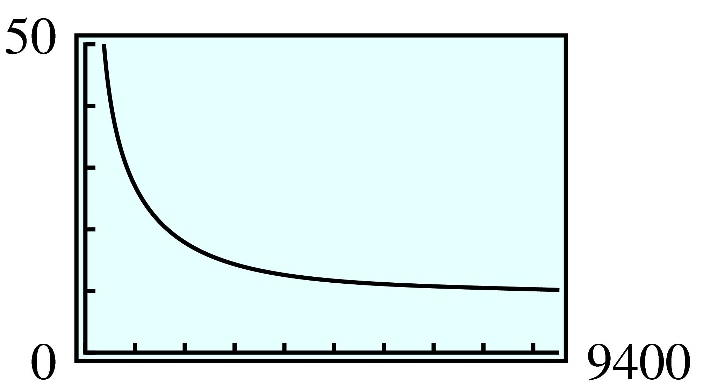
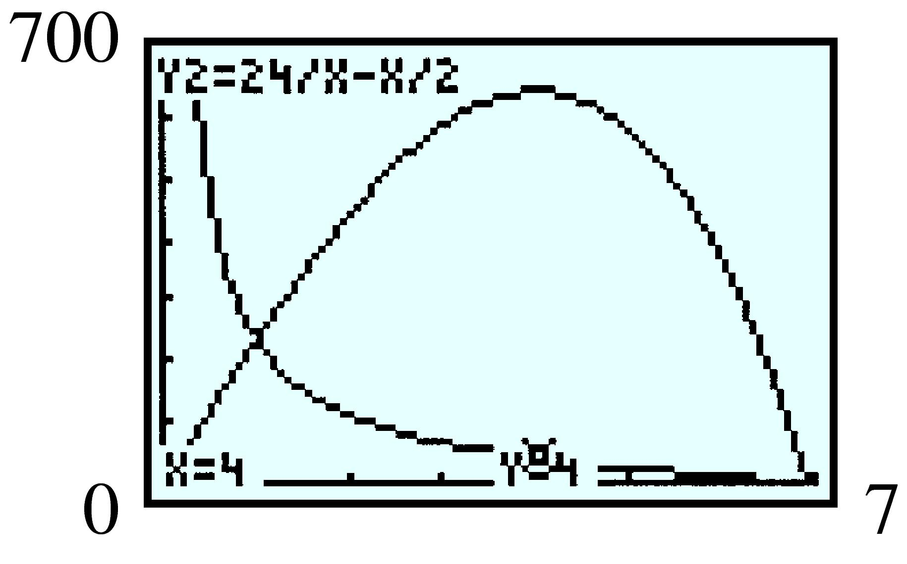
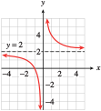

Section 7.4 Graphing Rational Functions
¶Subsection 7.4.1 Introduction
A rational function is the quotient of two polynomials. (As with rational numbers, the word rational refers to a ratio.)
Rational Function.
A rational function is one of the form
where \(P(x)\) and \(Q(x)\) are polynomials and \(Q(x)\) is not the zero polynomial.
The graphs of rational functions can be quite different from the graphs of polynomials.
Example 7.4.1.
Francine is planning a 60-mile training flight through the desert on her cycle-plane, a pedal-driven aircraft. If there is no wind, she can pedal at an average speed of 15 miles per hour, so she can complete the flight in 4 hours.
If there is a headwind of \(x\) miles per hour, it will take Francine longer to fly 60 miles. Express the time it will take to complete the training flight as a function of \(x\text{.}\)
Make a table of values for the function.
Graph the function and explain what it tells you about the time Francine should allot for the flight.
-
If there is a headwind of \(x\) miles per hour, Francine's ground speed will be \(15 - x\) miles per hour. Using the fact that time \(\text{time} = \dfrac{\text{distance}}{\text{rate}}\text{,}\) we find that the time needed for the flight will be
\begin{equation*} t = f (x) = \frac{60}{15 - x} \end{equation*} -
We evaluate the function for several values of \(x\text{,}\) as shown in the table below.
\(x\) \(0\) \(3\) \(5\) \(7\) \(9\) \(10\) \(t\) \(4\) \(5\) \(6\) \(7.5\) \(10\) \(12\) For example, if the headwind is \(\alert{5}\) miles per hour, then
\begin{equation*} t=\frac{60}{15-\alert{5}}=\frac{60}{10}=6 \end{equation*}Francine's effective speed is only \(10\) miles per hour, and it will take her \(6\) hours to fly the \(60\) miles. The table shows that as the speed of the headwind increases, the time required for the flight increases also.
-
The graph of the function is shown below. You can use your calculator with the window
\begin{align*} \text{Xmin} \amp = -8.5 \amp\amp \text{Xmax} = 15\\ \text{Ymin} \amp = 0 \amp\amp \text{Ymax} = 30 \end{align*}to verify the graph. In particular, the point \((0, 4)\) lies on the graph. This point tells us that if there is no wind, Francine can fly \(60\) miles in \(4\) hours, as we calculated earlier.

The graph is increasing, as indicated by the table of values. In fact, as the speed of the wind gets close to \(15\) miles per hour, Francine's flying time becomes extremely large. In theory, if the wind speed were exactly \(15\) miles per hour, Francine would never complete her flight. On the graph, the time becomes infinite at \(x = 15\text{.}\)
What about negative values for \(x\text{?}\) If we interpret a negative headwind as a tailwind, Francine's flying time should decrease for negative \(x\)-values. For example, if \(x = -5\text{,}\) there is a tailwind of \(5\) miles per hour, so Francine's effective speed is \(20\) miles per hour, and she can complete the flight in \(3\) hours. As the tailwind gets stronger (that is, as we move farther to the left in the \(x\)-direction), Francine's flying time continues to decrease, and the graph approaches the \(x\)-axis.
The vertical dashed line at \(x=15\) on the graph of \(t=\dfrac{60}{15-x}\) is a vertical asymptote for the graph. We first encountered asymptotes in Section 2.2 when we studied the graph of \(y=\dfrac{1}{x}\text{.}\) Locating the vertical asymptotes of a rational function is an important part of determining the shape of the graph.
Checkpoint 7.4.2.
Queueing theory is used to predict your waiting time in a line, or queue. For example, suppose the attendant at a toll booth can process \(6\) vehicles per minute. The average total time spent by a motorist negotiating the toll booth depends on the rate, \(r\text{,}\) at which vehicles arrive, according to the formula
What is the average time spent at the toll booth if vehicles arrive at a rate of \(3\) vehicles per minute?
Graph the function on the domain \([0, 6]\text{.}\)
What is the vertical asymptote of the graph? What does it tell you about the queue?
\(0.25\) min
- 
\(r=6\text{.}\) The wait time becomes infinite as the arrival rate approaches \(6\) vehicles per minute.
Example 7.4.3.
EarthCare decides to sell T-shirts to raise money. The company makes an initial investment of $100 to pay for the design of the T-shirt and to set up the printing process. After that, the T-shirts cost $5 each for labor and materials.
Express the average cost per T-shirt as a function of the number of T-shirts EarthCare produces.
Make a table of values for the function.
Graph the function and explain what it tells you about the cost of the T-shirts.
-
If EarthCare produces \(x\) T-shirts, the total costs will be \(100 + 5x\) dollars. To find the average cost per T-shirt, we divide the total cost by the number of T-shirts produced, to get
\begin{equation*} C = g(x) = \frac{100 + 5x}{x} \end{equation*} -
We evaluate the function for several values of \(x\text{,}\) as shown in the table
\(x\) \(1\) \(2\) \(4\) \(5\) \(10\) \(20\) \(C\) \(105\) \(55\) \(40\) \(25\) \(15\) \(10\) If EarthCare makes only one T-shirt, its cost is $105. But if more than one T-shirt is made, the cost of the original $100 investment is distributed among them. For example, the average cost per T-shirt for \(\alert{2}\) T-shirts is
\begin{equation*} \frac{100 + 5(\alert{2})}{\alert{2}}=55 \end{equation*}and the average cost for \(\alert{5}\) T-shirts is
\begin{equation*} \frac{100 + 5(\alert{5})}{\alert{5}}=25 \end{equation*} -
The graph is shown below. You can use your calculator with the window
\begin{align*} \text{Xmin} \amp = 0 \amp\amp \text{Xmax} = 470\\ \text{Ymin} \amp = 0 \amp\amp \text{Ymax} = 30 \end{align*}to verify the graph. Use the Trace to locate on the graph several points from the table of values. For example, the point \((5, 25)\) indicates that if EarthCare makes \(5\) T-shirts, the cost per shirt is $\(25\text{.}\)
The graph shows that as the number of T-shirts increases, the average cost per shirt continues to decrease, but not as rapidly as at first. Eventually the average cost levels off and approaches $5 per T-shirt. For example, if EarthCare produces \(\alert{400}\) T-shirts, the average cost per shirt is
\begin{equation*} \frac{100+5(\alert{400})}{\alert{400}}=5.25 \end{equation*}
The horizontal line \(C = 5\) on the graph of \(C = \displaystyle{\frac{100 + 5x}{x}}\) is a horizontal asymptote. As \(x\) increases, the graph approaches the line \(C = 5\) but never actually meets it. The average price per T-shirt will always be slightly more than $5. Horizontal asymptotes are also important in sketching the graphs of rational functions.
Checkpoint 7.4.4.
Delbert prepares a \(20\%\) glucose solution of by mixing \(2\) mL of glucose with \(8\) mL of water. If he adds \(x\) ml of glucose to the solution, its concentration is given by
How many milliliters of glucose should Delbert add to increase the concentration to \(50\%\text{?}\)
Graph the function on the domain \([0, 100]\text{.}\)
What is the horizontal asymptote of the graph? What does it tell you about the solution?
\(4\) ml
- 
\(C=1\text{.}\) As Delbert adds more glucose to the mixture, its concentration increases toward \(100\%\text{.}\)
Subsection 7.4.2 Domain of a Rational Function
Most applications of rational functions have restricted domains, that is, they make sense for only a subset of the real numbers on the \(x\)-axis. Consequently, only a portion of the graph is useful for analyzing the application. However, a knowledge of the general shape and properties of the whole graph can be very helpful in understanding a rational function.
As we stated earlier, a rational function is a quotient of two polynomials. Some examples of rational functions are shown below.
Because we cannot divide by zero, a rational function \(f(x) = \displaystyle{\frac{P(x)}{Q(x)}}\) is undefined for any value \(x = a\) where \(Q(a) = 0\text{.}\) These \(x\)-values are not in the domain of the function.
Example 7.4.5.
Find the domains of the rational functions \(f\text{,}\) \(g\text{,}\) \(h\text{,}\) and \(k\) defined above.
The domain of \(f\) is the set of all real numbers except \(3\text{,}\) because the denominator, \((x - 3)^2\text{,}\) equals \(0\) when \(x = 3\text{.}\)
The domain of \(g\) is the set of all real numbers except \(-1\text{,}\) because \(x + 1\) equals zero when \(x=-1\text{.}\)
The denominator of the function \(h\text{,}\) \(x^2 + 4\text{,}\) is never equal to zero, so the domain of \(h\) is all the real numbers.
The domain of \(k\) is the set of all real numbers except \(3\) and \(-3\text{,}\) because \(x^2 - 9\) equals \(0\) when \(x = 3\) or \(x = -3\text{.}\)
Note 7.4.6.
We only need to exclude the zeros of the denominator from the domain of a rational function. We do not exclude the zeros of the numerator. In fact, the zeros of the numerator include the zeros of the rational function itself, because a fraction is equal to \(0\) when its numerator is \(0\) but its denominator is not \(0\text{.}\)
Checkpoint 7.4.7.
Find the domain of \(F(x) = \displaystyle{\frac{x - 2}{x + 4}}\text{.}\)
Find the zeros of \(F(x)\text{.}\)
\(x\ne -4\)
\(x=2\)
Subsection 7.4.3 Vertical Asymptotes
As we saw in Section 7.2, a polynomial function is defined for all values of \(x\text{,}\) and its graph is a smooth curve without any breaks or holes. The graph of a rational function, on the other hand, will have breaks or holes at those \(x\)-values where it is undefined.
Example 7.4.8.
Investigate the graph of \(f(x) = \displaystyle{\frac{2}{(x - 3)^2}}\) near \(x = 3\text{.}\)
This function is undefined for \(x = 3\text{,}\) so there is no point on the graph with \(x\)-coordinate \(3\text{.}\) However, we can make a table of values for other values of \(x\text{.}\) Plotting the ordered pairs in the table results in the points shown below>.
| \(x\) | \(y\) |
| \(0\) | \(\frac{2}{9}\) |
| \(1\) | \(\frac{1}{2}\) |
| \(2\) | \(2\) |
| \(3\) | undefined |
| \(4\) | \(2\) |
| \(4\) | \(\frac{1}{2}\) |
| \(6\) | \(\frac{2}{9}\) |
Next, we make a table showing x-values close to \(3\text{,}\) as shown below. As we choose \(x\)-values closer and closer to \(3\text{,}\) \((x - 3)^2\) gets closer to \(0\text{,}\) so the fraction \(\dfrac{2}{(x-3)^2}\) gets very large. This means that the graph approaches, but never touches, the vertical line \(x=3\text{.}\) In other words, the graph has a vertical asymptote at \(x=3\text{.}\) We indicate the vertical asymptote by a dashed line, as shown in the figure.
In general, we have the following result.
Vertical Asymptotes.
If \(Q(a) = 0\) but \(P(a) \ne 0\text{,}\) then the graph of the rational function \(f(x) = \displaystyle{\frac{P(x)}{Q(x)}}\) has a vertical asymptote at \(x=a\text{.}\)
Note 7.4.9.
If \(P(a)\) and \(Q(a)\) are both zero, then the graph of the rational function \(\displaystyle{\frac{P(x)}{Q(x)}}\) may have a hole at \(x=a\) rather than an asymptote. (This possibility is considered in the homework exercises.)
Checkpoint 7.4.10.
Find the vertical asymptotes of \(G(x) = \displaystyle{\frac{4x^2}{x^2 - 4}}\text{.}\)
\(x=-2\) and \(x=2\)
Near a vertical asymptote, the graph of a rational function has one of the four characteristic shapes, illustrated below. Locating the vertical asymptotes can help us make a quick sketch of a rational function.

Example 7.4.11.
Locate the vertical asymptotes and sketch the graph of \(g(x) = \displaystyle{\frac{x}{x + 1}}\text{.}\)
The denominator, \(x+1\text{,}\) equals zero when \(x = -1\text{.}\) Because the numerator does not equal zero when \(x = -1\text{,}\) there is a vertical asymptote at \(x = -1\text{.}\) The asymptote separates the graph into two pieces.
We can use the Table feature of a calculator to evaluate \(g(x)\) for several values of \(x\) on either side of the asymptote, as shown in figure (a). We plot the points found in this way; then connect the points on either side of the asymptote to obtain the graph shown in figure (b).
Checkpoint 7.4.12.
Find the vertical asymptotes of \(f(x) = \displaystyle{\frac{1}{x^2-4}}\) . Locate any \(x\)-intercepts.
Evaluate the function at \(x = -3\text{,}\) \(-1\text{,}\) \(1\text{,}\) and \(3\text{.}\) Sketch a graph of the function.
\(x=-2\) and \(x=2\text{,}\) no \(x\)-intercepts
-
\(x\) \(-3\) \(-1\) \(1\) \(3\) \(y\) \(\frac{1}{5} \) \(\frac{-1}{3} \) \(\frac{-1}{3} \) \(\frac{1}{5} \) 
Subsection 7.4.4 Horizontal Asymptotes
Look again at the graph of \(g(x) = \displaystyle{\frac{x}{x + 1}}\) in Example 7.4.11. As \(\abs{x}\) gets large—that is, as we move away from the origin along the \(x\)-axis in either direction—the corresponding \(y\)-values get closer and closer to \(1\text{.}\) The graph approaches, but never coincides with, the line \(y=1\text{.}\) We say that the graph has a horizontal asymptote at \(y=1\text{.}\)
When does a rational function \(f(x) = \displaystyle{\frac{P(x)}{Q(x)}}\) have a horizontal asymptote? It depends on the degrees of the two polynomials \(P(x)\) and \(Q(x)\text{.}\) The degree of the numerator of \(g(x)= \displaystyle{\frac{x}{x + 1}}\) is equal to the degree of the denominator. In other words, the highest power of \(x\) in the numerator (1, in this case) is the same as the highest power in the denominator.
Consider the three rational functions whose graphs are shown below.

- The graph of \(r(x) = \displaystyle{\frac{x + 1}{x^2}}\) in figure (a) has a horizontal asymptote at \(y = 0\text{,}\) the \(x\)-axis, because the degree of the denominator is larger than the degree of the numerator. Higher powers of \(x\) grow much more rapidly than smaller powers. Thus, for large values of \(\abs{x}\text{,}\) the denominator is much larger in absolute value than the numerator of \(r(x)\text{,}\) so the function values approach \(0\text{.}\)
- The graph of \(s(x) = \displaystyle{\frac{x^2 - 4}{2x^2}}\) in figure (b) has a horizontal asymptote at \(y = \dfrac{1}{2}\text{,}\) because the numerator and denominator of the fraction have the same degree. For large values of \(\abs{x}\text{,}\) the terms of lower degree are negligible compared to the squared terms. As \(x\) increases, \(s(x)\) is approximately equal to \(\dfrac{x^2}{2x^2}\text{,}\) or \(\dfrac{1}{2}\text{.}\) Thus, the function values approach a constant value of \(\dfrac{1}{2}\text{.}\)
- The graph of \(t(x) = \displaystyle{\frac{x^2 + 1}{x - 1}}\) in figure (c) does not have a horizontal asymptote, because the degree of the numerator is larger than the degree of the denominator. As \(\abs{x}\) increases, \(x^2 + 1\) grows much faster than \(x - 1\text{,}\) so their ratio does not approach a constant value. The function values increase without bound.
We summarize our discussion as follows.
Horizontal Asymptotes.
Suppose \(f(x) = \displaystyle{\frac{P(x)}{Q(x)}}\) is a rational function, where the degree of \(P(x)\) is \(m\) and the degree of \(Q(x)\) is \(n\text{.}\)
If \(m\lt n\text{,}\) the graph of \(f\) has a horizontal asymptote at \(y=0\text{.}\)
If \(m = n\text{,}\) the graph of \(f\) has a horizontal asymptote at \(y = \dfrac{a}{b}\text{,}\) where \(a\) is the lead coefficient of \(P(x)\) and \(b\) is the lead coefficient of \(Q(x)\text{.}\)
If \(m\gt n\text{,}\) the graph of \(f\) does not have a horizontal asymptote.
Example 7.4.13.
Locate the horizontal asymptotes and sketch the graph of \(h(x) = \displaystyle{\frac{2x^2}{x^2 + 4}}\text{.}\)
The numerator and denominator of the fraction are both second-degree polynomials, so the graph does have a horizontal asymptote. The lead coefficients of \(P(x)\) and \(Q(x)\) are \(2\) and \(1\text{,}\) respectively, so the horizontal asymptote is \(y = \dfrac{2}{1}\text{,}\) or \(y=2\text{.}\)
The function \(h\) does not have a vertical asymptote because the denominator, \(x^2 + 4\text{,}\) is never equal to zero.
The \(y\)-intercept of the graph is the point \((0, 0)\text{.}\) We can plot several points by evaluating the function at convenient \(x\)-values, and use the asymptote to help us sketch the graph, as shown below.

Checkpoint 7.4.14.
Locate the horizontal and vertical asymptotes and sketch the graph of \(k(x) = \displaystyle{\frac{x^2 - 1}{x^2 - 9}}\text{.}\) Label the \(x\)- and \(y\)-intercepts with their coordinates.
\(y= 1\text{;}\) \(x = -3\text{,}\) \(x = 3\)
Subsection 7.4.5 Applications
It is often useful to simplify the formula for a rational function before using it. (See Algebra Skills Refresher Section A.9 to review operations on algebraic fractions.)
Example 7.4.15.
When estimating their travel time, pilots must take into account the prevailing winds. A tailwind adds to the plane's ground speed, while a headwind decreases the ground speed. Skyhigh Airlines is setting up a shuttle service from Dallas to Phoenix, a distance of \(800\) miles.
Express the time needed for a one-way trip, without wind, as a function of the speed of the plane.
Suppose there is a prevailing wind of \(30\) miles per hour blowing from the west. Write expressions for the flying time from Dallas to Phoenix and from Phoenix to Dallas.
Write an expression for the round-trip flying time, excluding stops, with a \(30\)-mile-per-hour wind from the west, as a function of the plane's speed. Simplify your expression.
-
Recall that \(\text{time} = \dfrac{\text{distance}}{\text{rate}}\text{.}\) If we let \(r\) represent the speed of the plane in still air, then the time required for a one-way trip is
\begin{equation*} f(r)=\frac{800}{r} \end{equation*} -
On the trip from Dallas to Phoenix, the plane encounters a headwind of \(30\) miles per hour, so its actual ground speed is \(r-30\text{.}\) On the return trip, the plane enjoys a tailwind of \(30\) miles per hour, so its actual ground speed is \(r+30\text{.}\) Therefore, the flying times are
\begin{equation*} \text{Dallas to Phoenix:}\hphantom{blank}\frac{800}{r-30} \end{equation*}and
\begin{equation*} \text{Phoenix to Dallas:}\hphantom{blank}\frac{800}{r+30} \end{equation*} -
The round-trip flying time from Dallas to Phoenix and back is
\begin{equation*} F(r) =\frac{800}{r-30}+\frac{800}{r+30} \end{equation*}The LCD for these fractions is \((r - 30)(r + 30)\text{.}\) Thus,
\begin{align*} \frac{800}{r-30}+\frac{800}{r+30} \amp= \frac{800\alert{({r+30})}}{(r-30)\alert{({r+30})}}+\frac{800\blert{({r-30})}}{(r+30)\blert{({r-30})}}\\ \amp = \frac{(800r + 24000) + (800r - 24000)} {(r + 30)(r - 30)}\\ \amp = \frac{1600r}{r^2 - 900} \end{align*}
(See Algebra Skills Refresher Section A.9 to review adding fractions.)
Checkpoint 7.4.16.
Navid took his outboard motorboat 20 miles upstream to a fishing site, returning downstream later that day. His boat travels 10 miles per hour in still water. Write an expression for the time Navid spent traveling, as a function of the speed of the current.
\(\dfrac{400}{100-x^2} \) hrs
Subsection 7.4.6 Section Summary
¶Subsubsection 7.4.6.1 Vocabulary
Look up the definitions of new terms in the Glossary.
Rational function
Vertical asymptote
Horizontal asymptote
Subsubsection 7.4.6.2 CONCEPTS
Rational Function.
A rational function is one of the form
\begin{equation*} f (x) =\frac{P(x)}{Q(x)} \end{equation*}where \(P(x)\) and \(Q(x)\) are polynomials and \(Q(x)\) is not the zero polynomial.
A rational function \(f (x) = \dfrac{P(x)}{Q(x)}\) is undefined for any value \(x=1\) where \(Q(a) = 0\text{.}\) These \(x\)-values are not in the domain of the function.
Vertical Asymptotes.
If \(Q(a) = 0\) but \(P(a) \ne 0\text{,}\) then the graph of the rational function \(f(x) = \displaystyle{\frac{P(x)}{Q(x)}}\) has a vertical asymptote at \(x=a\text{.}\)
Horizontal Asymptotes.
Suppose \(f(x) = \displaystyle{\frac{P(x)}{Q(x)}}\) is a rational function, where the degree of \(P(x)\) is \(m\) and the degree of \(Q(x)\) is \(n\text{.}\)
If \(m\lt n\text{,}\) the graph of \(f\) has a horizontal asymptote at \(y=0\text{.}\)
If \(m = n\text{,}\) the graph of \(f\) has a horizontal asymptote at \(y = \dfrac{a}{b}\text{,}\) where \(a\) is the lead coefficient of \(P(x)\) and \(b\) is the lead coefficient of \(Q(x)\text{.}\)
If \(m\gt n\text{,}\) the graph of \(f\) does not have a horizontal asymptote.
Subsubsection 7.4.6.3 STUDY QUESTIONS
Why does the word rational refer to a quotient?
How are the graphs of rational functions different from the graphs of polynomials?
What do the zeros of the numerator of a rational function tell you? What about the zeros of the denominator?
Under what circumstances can the graph of a rational function have a horizontal asymptote?
Subsubsection 7.4.6.4 SKILLS
Practice each skill in the Homework 7.4.7 problems listed.
Find the vertical asymptotes of a rational function: #13–32
Find the horizontal asymptotes of a rational function: #13–32
Interpret the significance of horizontal and vertical asymptotes in context: #1–10
Sketch the graph of a rational function: #13–36, 51–54
Write a rational function to model a situation: #37–42
Exercises 7.4.7 Homework 7.4
¶1.
The eider duck, one of the world's fastest flying birds, can exceed an airspeed of \(65\) miles per hour. A flock of eider ducks is migrating south at an average airspeed of \(50\) miles per hour against a moderate headwind. Their next feeding grounds are \(150\) miles away.
Express the ducks' travel time, \(t\text{,}\) as a function of the windspeed, \(v\text{.}\)
-
Complete the table showing the travel time for various windspeeds.
\(v\) \(0\) \(5\) \(10\) \(15\) \(20\) \(25\) \(30\) \(35\) \(40\) \(45\) \(50\) \(t\) \(\hphantom{00}\) \(\hphantom{00}\) \(\) \(\) \(\) \(\) \(\) \(\) \(\) \(\) \(\) What happens to the travel time as the headwind increases?
Use the table to choose an appropriate window and graph your function \(t(v) \text{.}\) Give the equations of any horizontal or vertical asymptotes. What does the vertical asymptote signify in the context of the problem?
\(t=\dfrac{150}{50-v} \)
-
\(v\) \(0\) \(5\) \(10\) \(15\) \(20\) \(25\) \(30\) \(35\) \(40\) \(45\) \(50\) \(t\) \(3\) \(3.33\) \(3.75 \) \(4.29 \) \(5 \) \(6 \) \(7.5 \) \(10 \) \(15 \) \(30 \) — The travel time increases as the headwind speed increases.

2.
The fastest fish in the sea may be the bluefin tuna, which has been clocked at \(43\) miles per hour in short sprints. A school of tuna is migrating a distance of \(200\) miles at an average speed of \(36\) miles per hour in still water, but they have run into a current flowing against their direction of travel.
Express the tuna's travel time, \(t\text{,}\) as a function of the current speed, \(v\text{.}\)
-
Complete the table showing the travel time for various current speeds.
\(v\) \(0\) \(4\) \(8\) \(12\) \(16\) \(20\) \(24\) \(28\) \(32\) \(36\) \(t\) \(\hphantom{00}\) \(\hphantom{00}\) \(\hphantom{00} \) \(\) \(\) \(\) \(\) \(\) \(\) \(\) What happens to the travel time as the current increases?
Use the table to choose an appropriate domain and range for your function \(t(v) \text{.}\) Give the equations of any horizontal or vertical asymptotes. What does the vertical asymptote signify in the context of the problem?
3.
The cost, in thousands of dollars, for immunizing \(p\) percent of the residents of Emporia against a dangerous new disease is given by the function
What is the domain of \(C\text{?}\)
-
Complete the table showing the cost of immunizing various percentages of the population.
\(p\) \(0\) \(15\) \(25\) \(40\) \(50\) \(75\) \(80\) \(90\) \(100\) \(C\) \(\hphantom{00}\) \(\hphantom{00}\) \(\) \(\) \(\) \(\) \(\) \(\) \(\) Graph the function \(C\text{.}\) (Use \(\text{Xmin} = 6\text{,}\) \(\text{Xmax}= 100\text{,}\) and appropriate values of Ymin and Ymax.) What percentage of the population can be immunized if the city is able to spend $\(108,000\text{?}\)
For what values of \(p\) is the total cost more than $\(1,728,000\text{?}\)
The graph has a vertical asymptote. What is it? What is its significance in the context of this problem?
\(0\le p \lt 100 \)
\(p\) \(0\) \(15\) \(25\) \(40\) \(50\) \(75\) \(80\) \(90\) \(100\) \(C\) \(0\) \(12.7\) \(24 \) \(48 \) \(72 \) \(216 \) \(288 \) \(648 \) — -
\(60\%\)

\(p\gt 96\%\)
\(p=100\text{;}\) As the percentage immunized approaches \(100\text{,}\) the cost grows without bound.
4.
The cost, in thousands of dollars, for immunizing \(p\) percent of a precious ore from a mine is given by the equation
What is the domain of \(C\text{?}\)
-
Complete the table showing the cost of extracting various percentages of the ore.
\(p\) \(0\) \(15\) \(25\) \(40\) \(50\) \(75\) \(80\) \(90\) \(100\) \(C\) \(\hphantom{00}\) \(\hphantom{00}\) \(\) \(\) \(\) \(\) \(\) \(\) \(\) Graph the function \(C\text{.}\) (Use \(\text{Xmin} = 6\text{,}\) \(\text{Xmax}= 100\text{,}\) and appropriate values of Ymin and Ymax.) What percentage of the ore can be extracted if $\(540,000\) can be spent on the extraction?
For what values of \(p\) is the total cost less than $\(1,440,000\text{?}\)
The graph has a vertical asymptote. What is it? What is its significance in the context of this problem?
5.
The total cost in dollars of producing \(n\) calculators is approximately \(20,000+8n\text{.}\)
Express the cost per calculator, \(C\text{,}\) as a function of the number \(n\) of calculators produced.
-
Complete the table showing the cost per calculator for various production levels.
\(n\) \(100\) \(200\) \(400\) \(500\) \(1000\) \(2000\) \(4000\) \(5000\) \(8000\) \(C\) \(\) \(\) \(\) \(\) \(\) \(\) \(\) \(\) \(\) -
Graph the function \(C(n)\) for the cost per calculator. Use the window
\begin{align*} {\text{Xmin}} \amp = 0 \amp\amp {\text{Xmax}} = 9400\\ {\text{Ymin}} \amp = 0 \amp\amp {\text{Ymax}} = 50 \end{align*} How many calculators should be produced so that the cost per calculator is $\(18\text{?}\)
For what values of \(n\) is the cost less than $\(12\) per calculator?
Find the horizontal asymptote of the graph. What does it represent in this context?
\(C=8+\dfrac{20,000}{n} \)
\(n\) \(100\) \(200\) \(400\) \(500\) \(1000\) \(2000\) \(4000\) \(5000\) \(8000\) \(C\) \(208 \) \(108 \) \(58 \) \(48 \) \(28 \) \(18 \) \(13 \) \(12 \) \(10.5 \) - 
\(2000\)
\(n\gt 5000\)
\(C=8\text{;}\) As \(n\) increases, the average cost per calculator approaches $\(8\text{.}\)
6.
The number of loaves of Mom’s Bread sold each day is approximated by the demand function
where \(p\) is the price per loaf in dollars.
-
Complete the table showing the demand for Mom's Bread at various prices per loaf. Round the values of \(D(p)\) to the nearest whole number.
\(p\) \(0.25\) \(0.50\) \(1.00\) \(1.25\) \(1.50\) \(1.75\) \(2.00\) \(2.25\) \(2.50\) \(2.75\) \(3.00\) Demand \(\) \(\) \(\) \(\) \(\) \(\) \(\) \(\) \(\) \(\) \(\) -
Graph the demand function \(C(n)\) in the window
\begin{align*} {\text{Xmin}} \amp = 0 \amp\amp {\text{Xmax}} = 3.74\\ {\text{Ymin}} \amp = 0 \amp\amp {\text{Ymax}} = 170 \end{align*}What happens to the demand for Mom's Bread as the price increases?
-
Add a row to your table to show the daily revenue from Mom’s Bread at various prices.
\(p\) \(0.25\) \(0.50\) \(1.00\) \(1.25\) \(1.50\) \(1.75\) \(2.00\) \(2.25\) \(2.50\) \(2.75\) \(3.00\) Demand \(\) \(\) \(\) \(\) \(\) \(\) \(\) \(\) \(\) \(\) \(\) Revenue \(\) \(\) \(\) \(\) \(\) \(\) \(\) \(\) \(\) \(\) \(\) Using the formula for \(D(p)\text{,}\) write an expression \(R(p)\) that approximates the total daily revenue as a function of the price, \(p\text{.}\)
Graph the revenue function \(R(p)\) in the same window with \(D(p) \text{.}\) Estimate the maximum possible revenue. Does the maximum for \(D(p)\) occur at the same value of \(p\) as the maximum for \(R(p)\text{?}\)
Find the horizontal asymptote of the graphs. What does it represent in this context?
7.
A computer store sells approximately \(300\) of its most popular model per year. The manager would like to minimize her annual inventory cost by ordering the optimal number of computers, \(x\text{,}\) at regular intervals. If she orders \(x\) computers in each shipment, the cost of storage will be \(6x\) dollars, and the cost of reordering will be \(\dfrac{300}{x} (15x + 10)\) dollars. The inventory cost is the sum of the storage cost and the reordering cost.
Use the distributive law to simplify the expression for the reordering cost. Then express the inventory cost, \(C\text{,}\) as a function of \(x\text{.}\)
-
Complete the table of values for the inventory cost for various reorder sizes.
\(x\) \(10\) \(20\) \(30\) \(40\) \(50\) \(60\) \(70\) \(80\) \(90\) \(100\) \(C\) \(\) \(\) \(\) \(\) \(\) \(\) \(\) \(\) \(\) \(\) -
Graph the function \(C\) for the cost per calculator. Use the window
\begin{align*} {\text{Xmin}} \amp = 0 \amp\amp {\text{Xmax}} = 150\\ {\text{Ymin}} \amp = 4500 \amp\amp {\text{Ymax}} = 5500 \end{align*}Estimate the minimum possible value for \(C\text{.}\)
How many computers should the manager order in each shipment so as to minimize the inventory cost? How many orders will she make during the year?
Graph the function \(y = 6x + 4500\) in the same window with the function \(C\text{.}\) What do you observe?
\(4500+\dfrac{3000}{x} \text{;}\) \(C(x) = 6x + 4500 + \dfrac{3000}{x} \)
\(x\) \(10\) \(20\) \(30\) \(40\) \(50\) \(60\) \(70\) \(80\) \(90\) \(100\) \(C\) \(4860 \) \(4770 \) \(4780 \) \(4815 \) \(4860 \) \(4910 \) \(5018 \) \(5073 \) \(5130 \) -
$\(4768.33\)

\(22\text{;}\) \(14\)
-

The graph of \(C\) approaches the line as an asymptote.
8.
A chain of electronics stores sells approximately \(500\) portable phones every year. The owner would like to minimize his annual inventory cost by ordering the optimal number of phones, \(x\text{,}\) at regular intervals. The cost of storing the phones will then be \(2x\) dollars, and the cost of reordering will be \(\dfrac{500}{x}(4x + 10) \text{.}\) The total annual inventory cost is the sum of the storage cost and the reordering cost.
Use the distributive law to simplify the expression for the reordering cost. Then express the inventory cost, \(C\text{,}\) as a function of \(x\text{.}\)
-
Complete the table of values for the inventory cost for various reorder sizes.
\(x\) \(10\) \(20\) \(30\) \(40\) \(50\) \(60\) \(70\) \(80\) \(90\) \(100\) \(C\) \(\) \(\) \(\) \(\) \(\) \(\) \(\) \(\) \(\) \(\) -
Graph the function \(C\) in the window
\begin{align*} {\text{Xmin}} \amp = 0 \amp\amp {\text{Xmax}} = 150\\ {\text{Ymin}} \amp = 2000 \amp\amp {\text{Ymax}} = 2500 \end{align*}Estimate the minimum possible value for \(C\text{.}\)
How many portable phones should the manager order in each shipment so as to minimize the inventory cost? How many orders will he make during the year?
Graph the function \(y = 2x + 2000\) in the same window with the function \(C\text{.}\) What do you observe?
9.
Francine wants to make a rectangular box. In order to simplify construction and keep her costs down, she plans for the box to have a square base and a total surface area of \(96\) square centimeters. She would like to know the largest volume that such a box can have.
If the square base has length \(x\) centimeters, show that the height of the box is \(h = \dfrac{24}{x}- \dfrac{x}{2}\) centimeters. (Hint: The surface area of the box is the sum of the areas of the six sides of the box.)
Write an expression for the volume, \(V\text{,}\) of the box as a function of the length, \(x\text{,}\) of its base.
-
Complete the table showing the heights and volumes of the box for various base lengths.
\(x\) \(1\) \(2\) \(3\) \(4\) \(5\) \(6\) \(7\) \(h\) \(\hphantom{000} \) \(\hphantom{000} \) \(\hphantom{000} \) \(\hphantom{000} \) \(\hphantom{000} \) \(\hphantom{000} \) \(\hphantom{000} \) \(V\) \(\hphantom{000} \) \(\hphantom{000} \) \(\hphantom{000} \) \(\hphantom{000} \) \(\hphantom{000} \) \(\hphantom{000} \) \(\hphantom{000} \) Explain why the values of \(h\) and \(V\) are negative when \(x=7\text{.}\)
Graph your expression for volume \(V(x)\) in an appropriate window. Approximate the maximum possible volume for a box of surface area \(96\) square centimeters.
What value of \(x\) gives the maximum volume?
Graph the height, \(h(x)\text{,}\) in the same window with \(V(x)\text{.}\) What is the height of the box with greatest volume? (Find the height directly from your graph and verify by using the formula given for \(h(x)\text{.}\))
The surface area is \(2x^2 + 4xh = 96\text{.}\) Solving for \(h\text{,}\) \(h=\dfrac{96-2x^2}{4x}=\dfrac{24}{x}-\dfrac{x}{2} \text{.}\)
\(V=24x-\dfrac{1}{2}x^3\)
-
\(x\) \(1\) \(2\) \(3\) \(4\) \(5\) \(6\) \(7\) \(h\) \(23.5 \) \(11 \) \(6.5 \) \(4\) \(2.3 \) \(1 \) \(-0.07 \) \(V\) \(23.5 \) \(44 \) \(58.5 \) \(64 \) \(57.5 \) \(36\) \(-3.5 \) If the base is more than \(7\) cm, the top and bottom alone exceed the total area allowed.
-

Maximum of \(64\) cu. cm
\(4\) cm
-
\(h=4\) cm

10.
Delbert wants to make a box with a square base and a volume of \(64\) cubic centimeters. He would like to know the smallest surface area that such a box can have.
If the square base has length \(x\) centimeters, show that the height of the box is \(h = \dfrac{64}{x^2}\) centimeters.
Write an expression for the surfacd area, \(S\text{,}\) of the box as a function of the length, \(x\text{,}\) of its base. (Hint: The surface area of the box is the sum of the areas of the six sides of the box.)
-
Complete the table showing the heights and surface areas of the box for various base lengths.
\(x\) \(1\) \(2\) \(3\) \(4\) \(5\) \(6\) \(7\) \(8\) \(h\) \(\hphantom{000} \) \(\hphantom{000} \) \(\hphantom{000} \) \(\hphantom{000} \) \(\hphantom{000} \) \(\hphantom{000} \) \(\hphantom{000} \) \(\hphantom{000} \) \(S\) \(\hphantom{000} \) \(\hphantom{000} \) \(\hphantom{000} \) \(\hphantom{000} \) \(\hphantom{000} \) \(\hphantom{000} \) \(\hphantom{000} \) \(\hphantom{000} \) Graph your expression for surface area \(S(x)\) in an appropriate window. Approximate the minimum possible surface area for Delbert's box.
What value of \(x\) gives the minimum surface area?
Graph the height, \(h(x)\text{,}\) in the same window with \(S(x)\text{.}\) What is the height of the box with smallest surface area? (Find the height directly from your graph and verify by using the formula given for \(h(x)\text{.}\))
11.
A train whistle sounds higher when the train is approaching you than when it is moving away from you. This phenomenon is known as the Doppler effect. If the actual pitch of the whistle is \(440\) hertz (this is the A note below middle C), then the note you hear will have the pitch
where the velocity, \(v\text{,}\) in meters per second is positive as the train approaches and is negative when the train is moving away. (The number \(332\) that appears in this expression is the speed of sound in meters per second.)
-
Complete the table of values showing the pitch of the whistle at various train velocities.
\(v\) \(-100\) \(-75\) \(-50\) \(-25\) \(0\) \(25\) \(50\) \(75\) \(100\) \(P\) \(\) \(\hphantom{000} \) \(\hphantom{000} \) \(\hphantom{000} \) \(\hphantom{000} \) \(\hphantom{000} \) \(\hphantom{000} \) \(\hphantom{000} \) \(\) Graph the function \(P\text{.}\) (Use the window \({\text{Xmin}} = -94\text{,}\) \({\text{Xmax}} = 94\text{,}\) and appropriate values of Ymin and Ymax.)
What is the velocity of the train if the note you hear has a pitch of \(415\) hertz (corresponding to the note A-flat)? A pitch of \(553.\overline{3}\) hertz (C-sharp)?
For what velocities will the pitch you hear be greater than \(456.5\) hertz?
The graph has a vertical asymptote (although it is not visible in the suggested window). Where is it and what is its significance in this context?
\(v\) \(-100\) \(-75\) \(-50\) \(-25\) \(0\) \(25\) \(50\) \(75\) \(100\) \(P\) \(338.15 \) \(358.92 \) \(382.41 \) \(409.19 \) \(440 \) \(475.83 \) \(518.01 \) \(568.4 \) \(629.66 \) 
\(-20\) m/sec; \(68\) m/sec
\(v \gt 12\) m/sec
\(v=332\text{;}\) As \(v\) approaches \(332\) m per sec, the pitch increases without bound.
12.
The maximum altitude (in meters) attained by a projectile shot from the surface of the Earth is
where \(v\) is the speed (in meters per second) at which the projectile was launched. (The radius of the Earth is \(6.4\times 10^6\) meters, and the constant \(19.6\) is related to the Earth’s gravitational constant.)
-
Complete the table of values showing the maximum altitude for various launch velocities.
\(v\) \(100\) \(200\) \(300\) \(400\) \(500\) \(600\) \(700\) \(800\) \(900\) \(1000\) \(h\) \(\) \(\hphantom{000} \) \(\hphantom{000} \) \(\hphantom{000} \) \(\hphantom{000} \) \(\hphantom{000} \) \(\hphantom{000} \) \(\hphantom{000} \) \(\) \(\) Graph the function \(h\text{.}\) (Use the window \({\text{Xmin}} = 0\text{,}\) \({{\text{Xmax}}} = 940\text{,}\) and appropriate values of Ymin and Ymax.)
Approximately what speed is needed to attain an altitude of \(4000\) meters? An altitude of \(16\) kilometers?
For what velocities will the projectile attain an altitude exceeding \(32\) kilometers?
The graph has a vertical asymptote (although it is not visible in the suggested window). Where is it and what is its significance in this context?
For Problems 13–30,
Find the horizontal and vertical asymptotes for each function.
Find the \(x\)- and \(y\)-intercepts for each function.
13.
\(y=\dfrac{1}{x+3} \)

14.
\(y=\dfrac{1}{x-3} \)
15.
\(y=\dfrac{2}{x^2 - 5x + 4} \)

16.
\(y=\dfrac{4}{x^2 - x - 6} \)
17.
\(y=\dfrac{x}{x-3} \)

18.
\(y=\dfrac{x}{x-2} \)
19.
\(y=\dfrac{x+1}{x+2} \)

20.
\(y=\dfrac{x-1}{x-3} \)
21.
\(y=\dfrac{2x}{x^2-4} \)

22.
\(y=\dfrac{x}{x^2-9} \)
23.
\(y=\dfrac{x-2}{x^2 + 5x + 4} \)

24.
\(y=\dfrac{x+1}{x^2 - x - 6} \)
25.
\(y=\dfrac{x^2-1}{x^2 - 4} \)

26.
\(y=\dfrac{2x^2}{x^3 - 1} \)
27.
\(y=\dfrac{x+1}{(x-1)^2} \)

28.
\(y=\dfrac{2(x^2-1)}{x^2 +4} \)
29.
\(y=\dfrac{x}{x^2+3} \)
30.
\(y=\dfrac{x^2+2}{x^2 +4} \)
31.
Graph the curve known as Newton's Serpentine: \(y = \dfrac{4x}{x^2 + 1}\text{.}\)

32.
Graph the curve known as the Witch of Agnesi: \(y = \dfrac{8}{x^2 + 4}\text{.}\)
For Problems 33–38,
Use polynomial division to write the fraction in the form \(y=\dfrac{k}{p(x)}+c \text{,}\) where \(k\) and \(c\) are constants.
Use transformations to sketch the graph.
33.
\(y=\dfrac{2x+2}{x} \)
- \(\displaystyle y=\dfrac{2}{x}+2\)
- 
34.
\(y=\dfrac{4x^2+3}{x^2} \)
35.
\(y=\dfrac{x+2}{x+1} \)
- \(\displaystyle y=\dfrac{1}{x+1}+1\)

36.
\(y=\dfrac{7-2x}{x-3} \)
37.
\(y=\dfrac{3x^2 - 12x + 13}{(x-2)^2} \)
- \(\displaystyle y=\dfrac{1}{(x-2)^2}+3\)

38.
\(y=\dfrac{-4x^2 + 8x - 3}{(x-1)^2} \)
Problems 39–45 involve operations on algebraci fractions. To review operations on algebraic fractions, see Algebra Skills Refresher Section A.9.
39.
River Queen Tours offers a \(50\)-mile round-trip excursion on the Mississippi River on a paddle wheel boat. The current in the Mississippi is \(8\) miles per hour.
Express the time required for the downstream journey as a function of the speed of the paddle wheel boat in still water.
Write a function for the time required for the return trip upstream.
Write and simplify an expression for the time needed for the round trip as a function of the boat's speed.
\(\dfrac{25}{s+8} \)
\(\dfrac{25}{s-8} \)
\(\dfrac{50s}{s^2-64} \)
40.
A rowing team can maintain a speed of \(15\) miles per hour in still water. The team's daily training session includes a \(5\)-mile run up the Red Cedar River and the return downstream.
Express the team's time on the upstream leg as a function of the speed of the current.
Write a function for the team's time on the downstream leg.
Write and simplify an expression for the total time for the training run as a function of the current's speed.
41.
Two pilots for the Flying Express parcel service receive packages simultaneously. Orville leaves Boston for Chicago at the same time Wilbur leaves Chicago for Boston. Each selects an airspeed of \(400\) miles per hour for the \(900\)-mile trip. The prevailing winds blow from east to west.
Express Orville's flying time as a function of the windspeed.
Write a function for Wilbur's flying time.
Who reaches his destination first? By how much time (in terms of windspeed)?
\(\dfrac{900}{400+w} \)
\(\dfrac{900}{400-w} \)
Orville by \(\dfrac{1800w}{160,000-w^2} \) hours
42.
On New Year's Day, a blimp leaves its berth in Carson, California, and heads north for the Rose Bowl, \(23\) miles away. There is a breeze from the north at \(6\) miles per hour.
Express the time required for the trip as a function of the blimp's airspeed.
Write a function for the time needed for the return trip.
Which trip takes longer? By how much time (in terms of the blimp's airspeed)?
43.
The focal length of a lens is given by the formula
where \(f\) stands for the focal length, \(p\) is the distance from the object viewed to the lens, and \(q\) is the distance from the image to the lens. Suppose you estimate that the distance from your cat (the object viewed) to your camera lens is \(60\) inches greater than the distance from the lens to the film inside the camera, where the image forms.
Express \(1/f\) as a single fraction in terms of \(q\text{.}\)
Write an expression for \(f\) as a function of \(q\text{.}\)
\(\dfrac{1}{f}=\dfrac{2q+60}{q^2+60q} \)
\(f=\dfrac{q^2+60q}{2q+60} \)
44.
If two resistors, \(R_1\) and \(R_2\text{,}\) in an electrical circuit are connected in parallel, the total resistance \(R\) in the circuit is given by
Suppose that the second resistor, \(R_2\text{,}\) is \(10\) ohms greater than the first. Express \(1/R\) as a single fraction in terms of \(R_1\text{.}\)
Write an expression for \(R\) as a function of \(R_1\text{.}\)
45.
Show that the equation \(\dfrac{1}{y}-\dfrac{1}{x}=\dfrac{1}{k} \) is equivalent to \(y=\dfrac{kx}{x+k} \) on their common domain.
-
Graph the functions \(y=\dfrac{kx}{x+k} \) for \(k = 1, 2,\) and \(3\) in the window
\begin{align*} {\text{Xmin}} \amp = 0 \amp\amp {\text{Xmax}} = 30\\ {\text{Ymin}} \amp = 0 \amp\amp {\text{Ymax}} = 4 \end{align*}Describe the graphs.
\(\dfrac{1}{y}=\dfrac{1}{x}+\dfrac{1}{k}=\dfrac{k+x}{xk}\text{,}\) so by taking reciprocals, \(y=\dfrac{kx}{x+k} \text{.}\)
-

The graphs increase from the origin and approach a horizontal asymptote at \(y=k\text{.}\)
46.
Consider the graph of \(y = \dfrac{ax}{x + k}\text{,}\) where \(a\) and \(k\) are positive constants.
What is the horizontal asymptote of the graph?
Show that for \(x = k\text{,}\) \(y = \dfrac{a}{2}\text{.}\)
-
Sketch the graph of \(y = \dfrac{ax}{x + k}\)for \(a=4\) and \(k=10\) in the window
\begin{align*} {\text{Xmin}} \amp = 0 \amp\amp {\text{Xmax}} = 60\\ {\text{Ymin}} \amp = 0 \amp\amp {\text{Ymax}} = 5 \end{align*}Illustrate your answers to parts (a) and (b) on the graph.
For Problems 47–48,
Use your answers to Problem 46 to find equations of the form \(y=\dfrac{ax}{x+k}\) for the graphs shown.
Check your answer with a graphing calculator.
47.

\(\dfrac{12x}{x+20} \)
48.
49.
The Michaelis-Menten equation is the rate equation for chemical reactions catalyzed by enzymes. The speed of the reaction \(v\) is a function of the initial concentration of the reactant \(s\) and is given by
where \(V\) is the maximum possible reaction rate and \(K\) is called the Michaelis constant. (Source: Holme and Peck, 1993)
What value does \(v\) approach as \(s\) increases?
What is the value of \(v\) when \(s = K\text{?}\)
-
The table gives data from reactions of the enzyme D-amino acid oxidase.
\(s\) \(0.33\) \(0.66\) \(1.00\) \(1.66\) \(2.50\) \(3.33\) \(6.66\) \(v\) \(0.08\) \(0.14\) \(0.20\) \(0.30\) \(0.39\) \(0.46\) \(0.58\) Plot the data and estimate the values of \(V\) and \(K\) from your graph.
Graph the function \(v = \dfrac{0.88s}{s + 3.34}\) on top of your data points.
For a fixed \(s\) and \(V\text{,}\) what happens to \(v\) if \(K\) is very big?
For a fixed \(K\) and \(V\text{,}\) what happens to \(v\) if \(s\) is very big?
\(V\)
\(\dfrac{V}{2} \)
-

\(V\approx0.7, ~K\approx 2.2\) (many answers are possible)
(See figure.)
50.
Show that
is another form of the Michaelis-Menten equation. (See Problem 49.)
51.
Refer to the Michaelis-Menten equation in Problem 49. Solve for \(\dfrac{1}{v} \text{,}\) then write your new equation in the form \(\dfrac{1}{v}= a\cdot \dfrac{1}{s}+b \text{.}\) Express \(a\) and \(b\) in terms of \(V\) and \(K\text{.}\)
Use the data from part (c) of Problem 49 to make a table of values for \(\left(\dfrac{1}{s},\dfrac{1}{v} \right) \text{.}\)
Plot the points \(\left(\dfrac{1}{s},\dfrac{1}{v} \right) \text{,}\) then use linear regression to find the line of best fit.
Use your values for \(a\) and \(b\) to solve for \(V\) and \(K\text{.}\)
\(\dfrac{1}{v}=\dfrac{K}{V}\cdot\dfrac{1}{s} +\dfrac{1}{V}\text{;}\) Therefore, \(a=\dfrac{K}{V} \) and \(b=\dfrac{1}{V} \)
\(\frac{1}{s}\) \(3\) \(1.5\) \(1\) \(0.6\) \(0.4\) \(0.3\) \(0.15\) \(\frac{1}{v} \) \(12.5\) \(7.1\) \(5\) \(3.3\) \(2.6\) \(2.2\) \(1.7\) -

\(\dfrac{1}{v}=3.8\cdot \dfrac{1}{s}+1.1 \)
\(V\approx 0.89, ~K\approx 3.37\)
52.
Refer to the Michaelis-Menten equation in Problem 49. Write an equation for \(\dfrac{s}{v} \) in the form \(\dfrac{s}{v}= cs+d \text{.}\) Express \(c\) and \(d\) in terms of \(V\) and \(K\text{.}\)
Use the data from part (c) of Problem 49 to make a table of values for \(\left(s,\dfrac{s}{v} \right) \text{.}\)
Plot the points \(\left(s,\dfrac{s}{v} \right) \text{,}\) then use linear regression to find the line of best fit.
Use your values for \(c\) and \(d\) to solve for \(V\) and \(K\text{.}\)
Problems 53-56 give examples of functions whose graphs have holes.
Find the domain of the function.
Reduce the fraction to lowest terms.
Graph the function. (Hint: The graph of the original function is identical to the graph of the function in part (b) except that certain points are excluded from the domain.) Indicate a hole in the graph by an open circle.